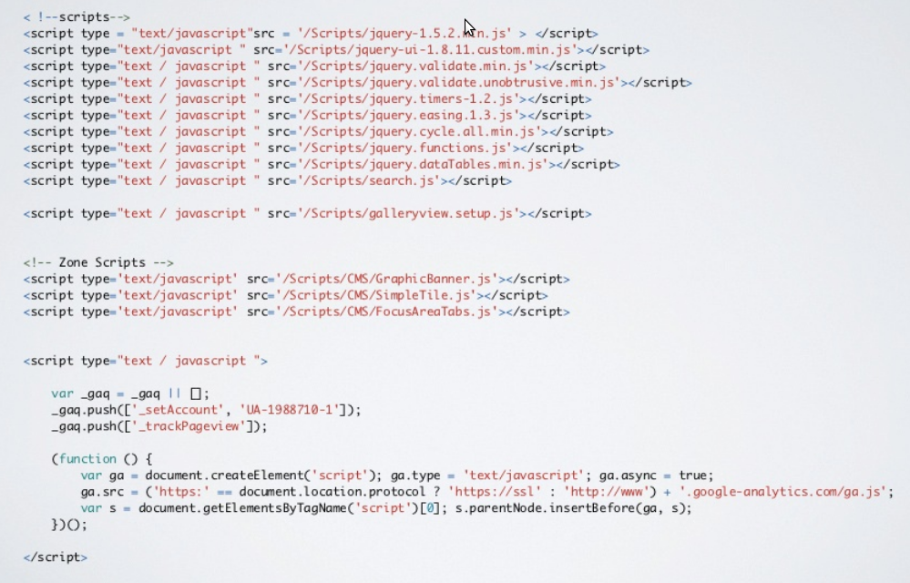
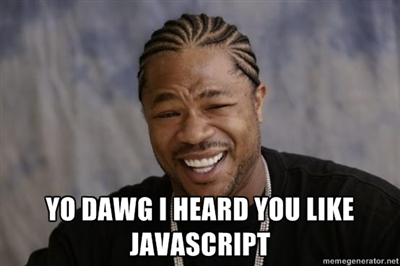

The Problem
- Some scripts need to load first
- Some scripts add other scripts (google analytics)
- Lots of downloads for users
- Creates a lot of global variables (jQuery, $, etc.)
- Difficult to track dependencies
- Doesn't encourage code re-use
The Solution
Lets Javascript load your Javascript.
What is AMD?
Asynchronous Module Definitions.
A scary acronym for 2 javascript functions: define and require.
define a module (usually a function)
require your dependencies (which functions do you want to load)
What is RequireJS
A javascript library that provides an implementation of AMD.
In other words, it provides those two function:
define and require
Step 1: Basic Example of
define() and require()
We define a module named higher_ground which contains information about the venue.
We require our higher_ground module and use it to render the venue information.
Step 2: define() Returning a Function
Our define now returns a function, which gives us an array of venues.
Tip: git diff step1 step2 to see the difference
Step 3: define() in external file
In this step, we move the define call and module to a separate file, and load it with require.
Note: No need to specify the .js extension
Step 4: Load file using
data-main attribute
Same as code from step3, but this time we use the data-main attribute on the script tag and RequireJS automatically requires our file.
Step 5: Configure our module locations in a single place
Instead of needing to repeat the full path to a module when requiring it, we can use require.config to define where all our files are located and use a shortcut.
Note: No need to specify the .js extension
Step 6: Add some styles and optimize!
Loading many separate javascript files isn't great for site speed, but RequireJS comes with an optimizer that will combine and compress your modules together.
Hint: Check out the version of the app in the www-built folder
Step 7: Add GMaps library with Google Maps to show venue maps
Shows an example of leveraging mapping functionality from multiple external libraries.
GMaps depends on Google Maps and Google Maps is externally hosted and asynchronous (it loads other libraries).
Hint: Take a look at the code in js/lib/gmaps.js to see how we define a dependency on an async cdn library (google maps).
Summary
AMD and RequireJS let you define re-usable modules of code and require them as dependencies in other modules.
This is great for code re-use and also when collaborating you can easily share code when it uses the AMD format.
We are a diverse team of creative designers & developers collaborating with clients from the Flynn Center to Vermont Sustainable Jobs Fund.
We are an agile development firm leveraging cutting edge tools like Symfony 2 to build complex, custom web applications.
... and We're Hiring Developers!